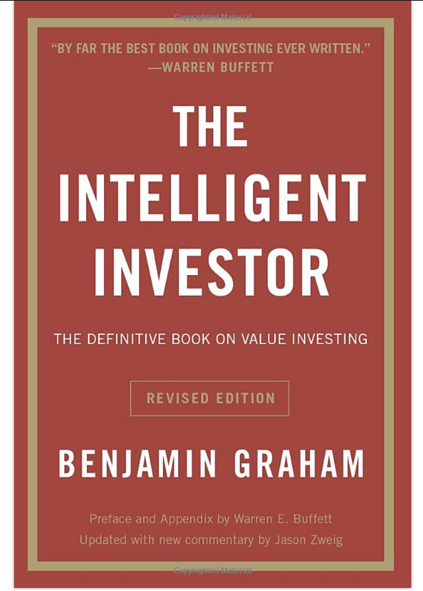
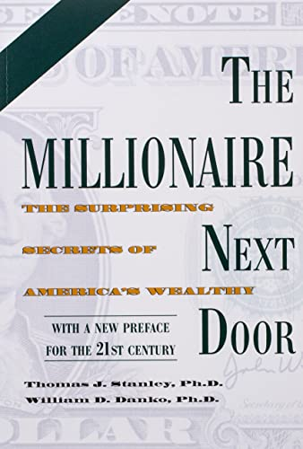
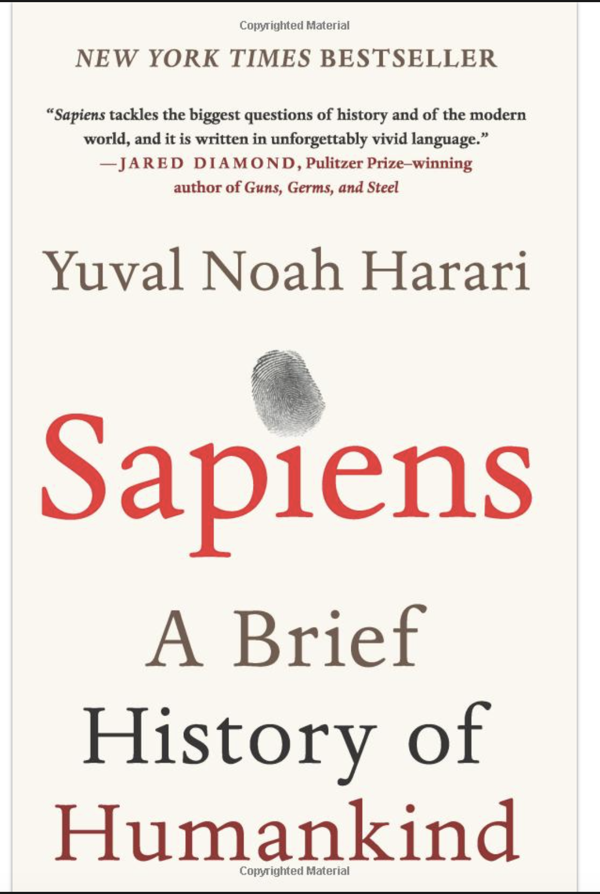

Zhe
I decided to enroll in a web programming class this summer due to my keen interest in web development and a desire to expand my
skill set in software development. Web programming offers a dynamic and versatile platform for creating interactive and
engaging online experiences. By mastering web programming, I aim to enhance my ability to build user-friendly and
visually appealing websites and web applications. I think this would be an invaluable skillset for a software engineer career path.
- Dan Dan Noodles
- Kung Pao Chicken
- Pad Thai
 Dandan noodles, also known as Dan Dan noodles or Dandanmian, are a popular Chinese dish originating from Sichuan
cuisine. It consists of a savory and spicy sauce served over noodles, typically wheat noodles like egg noodles or ramen.
Dandan noodles, also known as Dan Dan noodles or Dandanmian, are a popular Chinese dish originating from Sichuan
cuisine. It consists of a savory and spicy sauce served over noodles, typically wheat noodles like egg noodles or ramen. To eat it, I like to use chopsticks or a fork to thoroughly mix the noodles and the sauce. This ensures that every strand of noodle is coated with the flavorful sauce.
Dan Dan noodles offer a balance of spicy, savory, and tangy flavors. As you eat, you'll experience the heat from the chili oil and Sichuan peppercorns, the richness from the sauce, and the umami from the minced pork and seasonings. Highly reccomended!
The following are some of my favorite books:
| name | image | author | summary |
|---|---|---|---|
| The Intelligent Investor |  | Benjamin Graham | A widely acclaimed book on value investing |
| The Millionaire Next Door |  | Thomas J. Stanley and William D. Danko | The Surprising Secrets of America's Wealthy. The book is a compilation of research done by the two authors in the profiles of American millionaires. |
| The Grand Chessboard | Zbigniew Brzezinski | Eurasian geostrategy for the United States | |
| Sapiens: A Brief History of Humankind |  | Yuval Noah Harari | The book surveys the history of humankind, starting from the Stone Age and going up to the twenty-first century. |